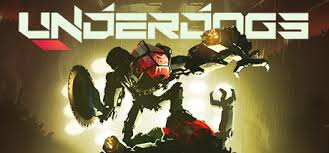

I am going to be telling you about underdogs vr which I Really think is the best vr game in the market right now. Underdogs is a very fun and challenging vr game basically what it is is a underground mech fighting. where you are in a mech called the rilla and it is a rougelike so if you die you lose all your upgrades and stuff and start from the first wave. but after every battle you get to go to shop and choose what you want to do like repair the mech or go to shop or even do some illegal stuff. like stealing from the shop fighting people fist fight flipping a coin for money "or losing money" or someone messing up your mech and damaging it while your distracted on something else. and then after that you get to fight in the arena again so it kind of repeats. but it is stll so fun because you are in a 10 ton mech and can throw some of the enemys around depends on their size. also you can get diffrent weapons like the buzz saw the thumper the nail gun and the grappling hook. but I didnt mention One which is my favorite the fingers. these ones are my favorite becaue if you have them on both hands then you can take the robots head and legs then pull and the enemy will be damaged or dead. Now for the diffrent arms we have the basic one, the kinofletic and the big boy all of these arms give you more hp and either more physical damage or more stun damage. now onto the enemys we have the roach, the junkdog, the jungle dog,the alpha dog, the jack, and the rhino. the jungle dog and the junkdog both have 3 variants the normal one, the one with spikes, and the one with armor. the armor is not to annoying if you hit it you get stunned for like 2 seconds but the spikes are really annoying if you hit the spikes your arm is basically half way damaged. go to page 2 for the upgrades/addons.
